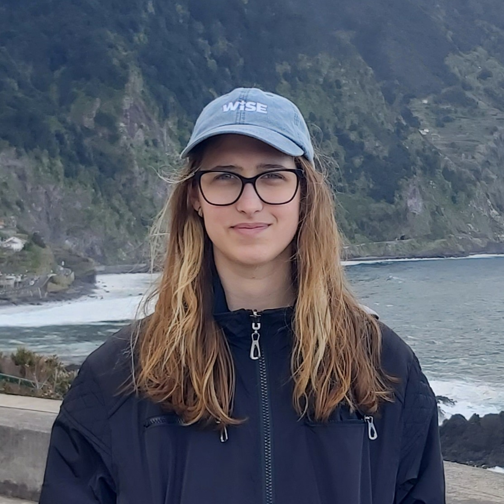

BSc Mathematics · University of WarwickSecond-year mathematics student at the University of Warwick, with interests in graph theory, competition mathematics, and programming.
I'm a second-year BSc Mathematics student at the University of Warwick, with a first-year average of 87% and a First in every module. My interests sit at the intersection of pure mathematics — analysis, algebra — and its computational side: graph theory, algorithms, and machine learning. Before Warwick, I studied at a mathematics-specialised class at Fazekas Mihály Gimnázium in Budapest, and competed nationally and internationally in mathematics and programming olympiads. Outside of academics, I dance, boulder, hike, and read.
First-year average 87% — a First in every module. Coursework: Analysis, Algebra, Mathematical Modelling, Statistics.
A group coursework project for Warwick's Mathematics by Computer module, looking at community detection in networks using Python, graph theory, and linear algebra.
2026Designed and trained a neural network in Python to navigate an unknown track while minimising completion time.
Aug 2025An educational robot game for children built around spatial awareness and coordination. Placed 3rd at the World Robot Olympiad — Future Innovators.
2022Selected participant in the Women in Science and Engineering programme; explored quantitative trading through probability, logic, and problem-solving.
Selected participant at this international mathematics camp.
Advanced programming camps covering graph theory, combinatorics, algorithms, and discovery-based problem-solving for selected students.
Regular participation focused on challenging problems, discovery-based learning, and mathematical research.
Mentoring 13–15-year-old students in mathematical problem-solving and supporting camp activities.
mentoringOrganiser of an international mathematics competition for secondary school students.
organisingMarker for national team selection tests, including the EGMO TST.
marking